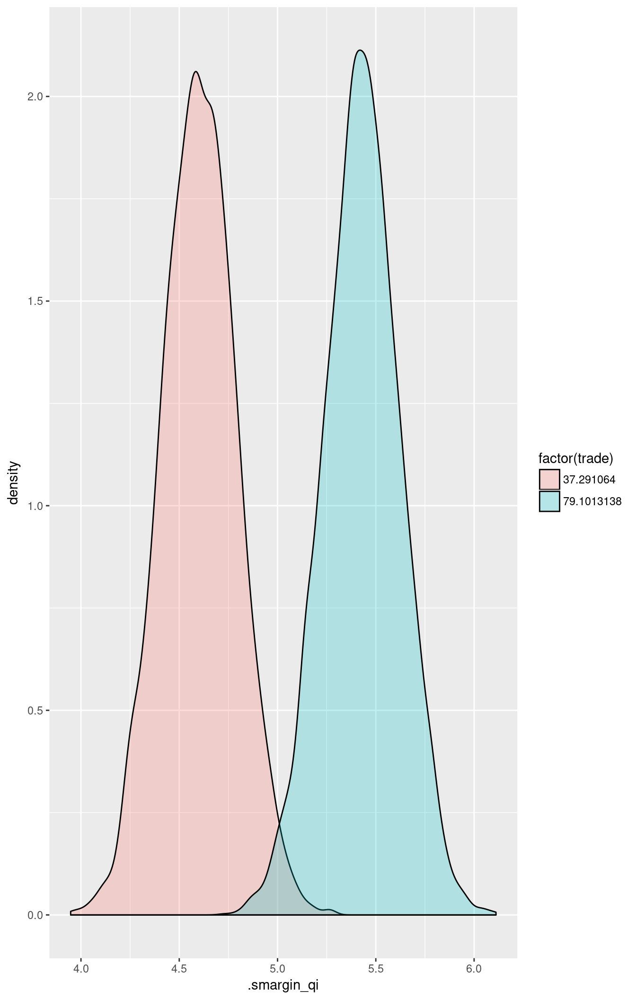
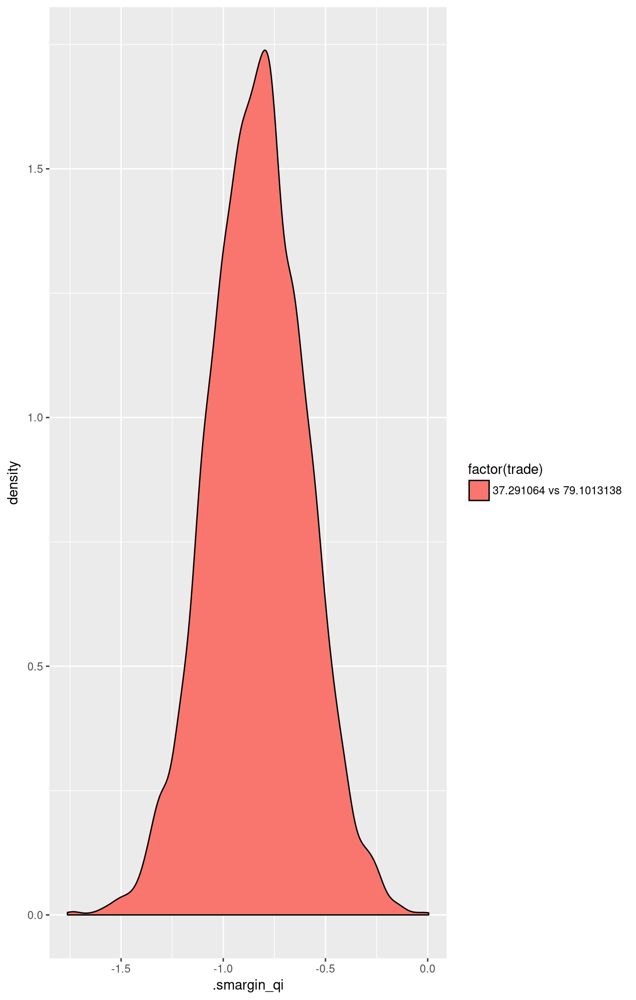
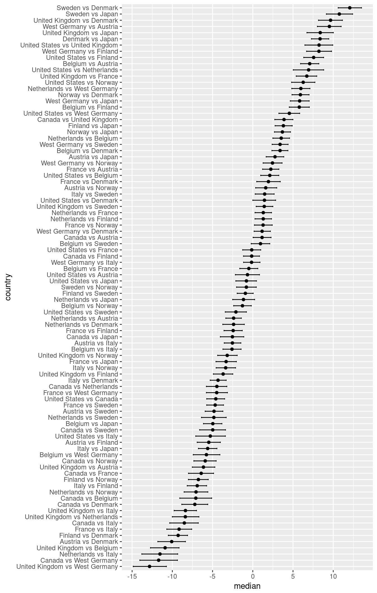

Load Zelig and attach example data frame:
data(macro, package = "Zelig")Estimate model:
m1 <- lm(unem ~ gdp + capmob + trade, data = macro)Summarize regression coefficients:
summary(m1)##
## Call:
## lm(formula = unem ~ gdp + capmob + trade, data = macro)
##
## Residuals:
## Min 1Q Median 3Q Max
## -5.3008 -2.0768 -0.3187 1.9789 7.7715
##
## Coefficients:
## Estimate Std. Error t value Pr(>|t|)
## (Intercept) 6.181294 0.450572 13.719 < 2e-16 ***
## gdp -0.323601 0.062820 -5.151 4.36e-07 ***
## capmob 1.421939 0.166443 8.543 4.22e-16 ***
## trade 0.019854 0.005606 3.542 0.000452 ***
## ---
## Signif. codes: 0 '***' 0.001 '**' 0.01 '*' 0.05 '.' 0.1 ' ' 1
##
## Residual standard error: 2.746 on 346 degrees of freedom
## Multiple R-squared: 0.2878, Adjusted R-squared: 0.2817
## F-statistic: 46.61 on 3 and 346 DF, p-value: < 2.2e-16Set explanatory variables to their default (mean/mode) values, with high (80th percentile) and low (20th percentile) values for the trade variable:
library(smargins)
summary(m1.sm)## trade mean sd median lower_2.5 upper_97.5
## 1 37.29106 4.606232 0.1840900 4.608350 4.242057 4.960110
## 2 79.10131 5.447510 0.1887723 5.443114 5.085004 5.839515Calculate first differences for the effect of high versus low trade on GDP:
## trade mean sd median lower_2.5
## 1 37.291064 vs 79.1013138 -0.8412778 0.2340503 -0.8423855 -1.285119
## upper_97.5
## 1 -0.3972501Plot the simulated distributions:
library(ggplot2)


Estimate a model with fixed effects for each country.
m2 <- lm(unem ~ gdp + trade + capmob + country, data = macro)Calculate AMEs for each country.
summary(m2.sm)## country mean sd median lower_2.5 upper_97.5
## 1 United States 6.7743279 0.5098339 6.7889329 5.8189271 7.7122150
## 2 Canada 6.0814082 0.4940724 6.0816743 5.0814158 7.0104936
## 3 United Kingdom -0.3172127 0.6856617 -0.2973599 -1.6553482 1.0104478
## 4 Netherlands 11.3818034 0.6664207 11.3456213 10.0879229 12.6746686
## 5 Belgium -1.4455207 0.5291723 -1.4581362 -2.5125999 -0.4176869
## 6 France 8.2050591 0.4034383 8.1968523 7.4226544 8.9759888
## 7 West Germany -0.1691968 0.5896994 -0.1722930 -1.2750502 1.0366401
## 8 Austria 4.6796289 0.4116264 4.6514328 3.8907585 5.5668689
## 9 Italy 5.6246173 0.3751289 5.6124441 4.8795015 6.3747691
## 10 Finland 6.9108883 0.3848722 6.9106336 6.1648959 7.6962836
## 11 Sweden 2.2317636 0.3622385 2.2359980 1.5228250 2.9498702
## 12 Norway 8.0723139 0.4291430 8.0743978 7.2473970 8.9513209
## 13 Denmark 1.3000698 0.3978798 1.2996105 0.4964369 2.0462632
## 14 Japan 10.5716314 0.3988274 10.5705246 9.7902353 11.3359794## country mean sd median
## 1 United States vs Canada -4.6074755 0.5720401 -4.5953127
## 2 United States vs United Kingdom 8.2198486 0.9061929 8.2245057
## 3 United States vs Netherlands 6.9435247 0.9646912 6.9581709
## 4 United States vs Belgium 2.0946990 0.5795341 2.1170539
## 5 United States vs France -0.1365605 0.5848026 -0.1403439
## 6 United States vs West Germany 4.5425643 0.6538331 4.5366268
## 7 United States vs Austria -0.6929197 0.7702580 -0.7040598
## 8 United States vs Italy -5.3003952 0.9286895 -5.2787210
## 9 United States vs Finland 7.5269289 0.6432334 7.5433219
## 10 United States vs Sweden -2.1236509 0.6581127 -2.1025621
## 11 United States vs Norway 6.2506050 0.7214878 6.2892812
## 12 United States vs Denmark 1.4017793 0.7283838 1.3996330
## 13 United States vs Japan -0.8294801 0.6545174 -0.8280913
## 14 Canada vs United Kingdom 3.8496446 0.5599630 3.8431462
## 15 Canada vs Netherlands -4.4902232 0.6469295 -4.4991709
## 16 Canada vs Belgium -7.0915406 1.0595797 -7.0966298
## 17 Canada vs France -6.3986209 0.8264965 -6.4180405
## 18 Canada vs West Germany -11.6990161 1.2349193 -11.6510463
## 19 Canada vs Austria 1.1283080 0.5605467 1.1148318
## 20 Canada vs Italy -8.5222718 0.9368046 -8.4988106
## 21 Canada vs Finland -0.1480159 0.5132770 -0.1512518
## 22 Canada vs Sweden -4.9968416 0.8825772 -4.9611645
## 23 Canada vs Norway -5.9418300 0.7361057 -5.9161546
## 24 Canada vs Denmark -7.2281011 0.8515008 -7.2332647
## 25 Canada vs Japan -2.5489763 0.7727005 -2.5484821
## 26 United Kingdom vs Netherlands -8.3895267 0.9030902 -8.3627237
## 27 United Kingdom vs Belgium -10.8888441 0.9116171 -10.8771211
## 28 United Kingdom vs France 6.7021745 0.6519142 6.7128635
## 29 United Kingdom vs West Germany -12.8273241 1.0788547 -12.8154270
## 30 United Kingdom vs Austria -6.1251496 0.7556494 -6.1131601
## 31 United Kingdom vs Italy -8.3564090 0.7147590 -8.3490650
## 32 United Kingdom vs Finland -3.6772843 0.6133865 -3.6868928
## 33 United Kingdom vs Sweden 1.4307312 0.5484664 1.4454420
## 34 United Kingdom vs Norway -3.1767443 0.6164086 -3.1633139
## 35 United Kingdom vs Denmark 9.6505798 0.7780236 9.6521399
## 36 United Kingdom vs Japan 8.3742559 0.8433736 8.3806592
## 37 Netherlands vs Belgium 3.5254302 0.5113324 3.5519997
## 38 Netherlands vs France 1.2941707 0.5214221 1.2798856
## 39 Netherlands vs West Germany 5.9732955 0.5530274 5.9643897
## 40 Netherlands vs Austria -2.3665723 0.4971363 -2.3553241
## 41 Netherlands vs Italy -11.5510002 1.1376555 -11.5432733
## 42 Netherlands vs Finland 1.2763239 0.5187832 1.2792878
## 43 Netherlands vs Sweden -4.8488257 0.7934723 -4.8197500
## 44 Netherlands vs Norway -7.0800852 0.7761873 -7.0837518
## 45 Netherlands vs Denmark -2.4009604 0.6702043 -2.4146421
## 46 Netherlands vs Japan -1.1497106 0.6870106 -1.1588443
## 47 Belgium vs France -0.4567909 0.5588068 -0.4427294
## 48 Belgium vs West Germany -5.7571861 0.8309572 -5.7461687
## 49 Belgium vs Austria 7.0701380 0.5974065 7.0818576
## 50 Belgium vs Italy -2.5804418 0.5718475 -2.5910813
## 51 Belgium vs Finland 5.7938141 0.6382537 5.8003350
## 52 Belgium vs Sweden 0.9449884 0.5878731 0.9544966
## 53 Belgium vs Norway -1.2862711 0.5527940 -1.2992437
## 54 Belgium vs Denmark 3.3928537 0.5072277 3.3784900
## 55 Belgium vs Japan -4.9470141 0.5619226 -4.9645017
## 56 France vs West Germany -4.4709150 0.6810708 -4.4406932
## 57 France vs Austria 2.2312595 0.5238509 2.2507867
## 58 France vs Italy -9.1500398 0.7977302 -9.1297309
## 59 France vs Finland -2.4478653 0.5661736 -2.4294756
## 60 France vs Sweden -4.6791248 0.5361089 -4.6846019
## 61 France vs Norway 1.2979861 0.5495251 1.2976045
## 62 France vs Denmark 1.9909057 0.7567186 1.9685435
## 63 France vs Japan -3.3094894 0.6254546 -3.3087059
## 64 West Germany vs Austria 9.5178346 0.7849265 9.5054897
## 65 West Germany vs Italy -0.1327452 0.5256270 -0.1341170
## 66 West Germany vs Finland 8.2415108 0.8316080 8.2254429
## 67 West Germany vs Sweden 3.3926851 0.4888803 3.3891487
## 68 West Germany vs Norway 2.4476967 0.6311497 2.4485649
## 69 West Germany vs Denmark 1.1614256 0.5312027 1.1659573
## 70 West Germany vs Japan 5.8405503 0.6013265 5.8373898
## 71 Austria vs Italy -2.4993175 0.5269495 -2.4913795
## 72 Austria vs Finland -5.4742581 0.7314375 -5.4917017
## 73 Austria vs Sweden -4.7813384 0.5659085 -4.7711635
## 74 Austria vs Norway 1.6172825 0.6705136 1.5825420
## 75 Austria vs Denmark -10.0817336 0.9016141 -10.0931272
## 76 Austria vs Japan 2.7455905 0.5387887 2.7305697
## 77 Italy vs Finland -6.9049893 0.6299532 -6.8926690
## 78 Italy vs Sweden 1.4692667 0.6031071 1.4341625
## 79 Italy vs Norway -3.3795591 0.6256285 -3.3644155
## 80 Italy vs Denmark -4.3245474 0.5245937 -4.3217615
## 81 Italy vs Japan -5.6108185 0.5795609 -5.6219121
## 82 Finland vs Sweden -0.9316938 0.5175152 -0.9264682
## 83 Finland vs Norway -6.7722441 0.6518200 -6.7878321
## 84 Finland vs Denmark -9.2715616 0.6125813 -9.2634142
## 85 Finland vs Japan 3.7973035 0.5544311 3.8017375
## 86 Sweden vs Norway -0.8101720 0.6489147 -0.7752670
## 87 Sweden vs Denmark 12.0171521 0.7540401 12.0244315
## 88 Sweden vs Japan 10.7408282 0.8188626 10.7427323
## 89 Norway vs Denmark 5.8920025 0.5365871 5.8893008
## 90 Norway vs Japan 3.6607431 0.5148287 3.6911385
## 91 Denmark vs Japan 8.3398678 0.5506740 8.3255096
## lower_2.5 upper_97.5
## 1 -5.71669687 -3.49293591
## 2 6.40707592 9.94427273
## 3 5.09139964 8.78170027
## 4 0.93641765 3.19746138
## 5 -1.30715406 1.01607279
## 6 3.32066542 5.78372744
## 7 -2.16253235 0.84753623
## 8 -7.19855188 -3.57982700
## 9 6.26515988 8.75260386
## 10 -3.49423194 -0.94227623
## 11 4.86071366 7.65784736
## 12 -0.02676798 2.78718371
## 13 -2.08767094 0.43334359
## 14 2.77224118 4.95626596
## 15 -5.80361738 -3.32662386
## 16 -9.06962170 -5.09633664
## 17 -7.99825137 -4.82802173
## 18 -14.16131513 -9.35509167
## 19 0.03404393 2.22788532
## 20 -10.36224042 -6.66231284
## 21 -1.17967769 0.86024394
## 22 -6.78227282 -3.41962264
## 23 -7.45181673 -4.66094763
## 24 -8.85437765 -5.55249776
## 25 -4.06550298 -1.07869760
## 26 -10.12409327 -6.69632168
## 27 -12.79600680 -9.12850363
## 28 5.44814312 7.93149613
## 29 -15.08131005 -10.68203446
## 30 -7.79469261 -4.69244856
## 31 -9.75173990 -6.93020626
## 32 -4.91574168 -2.42749626
## 33 0.35754577 2.48736938
## 34 -4.37868982 -1.92015177
## 35 8.09371456 11.19198531
## 36 6.76786514 10.05751724
## 37 2.45339670 4.50045345
## 38 0.26030628 2.29976727
## 39 4.93408253 7.04754836
## 40 -3.34766010 -1.39527776
## 41 -13.93052578 -9.33173994
## 42 0.22498943 2.25511049
## 43 -6.55770941 -3.36684956
## 44 -8.54651437 -5.59356220
## 45 -3.66397030 -1.08709805
## 46 -2.47723869 0.26676220
## 47 -1.61606650 0.59505478
## 48 -7.41589364 -4.14960422
## 49 5.99314049 8.24998711
## 50 -3.66313167 -1.46171520
## 51 4.56703289 7.02379261
## 52 -0.24760706 2.03738952
## 53 -2.37004714 -0.24820210
## 54 2.44469849 4.39001440
## 55 -6.03681495 -3.83836825
## 56 -5.80431431 -3.19156994
## 57 1.20203419 3.21140895
## 58 -10.75129585 -7.64983697
## 59 -3.61619586 -1.34603055
## 60 -5.78458941 -3.63679116
## 61 0.24775190 2.37912591
## 62 0.51298376 3.48488401
## 63 -4.50068676 -2.04442606
## 64 7.98952795 10.98670549
## 65 -1.13348205 0.95357814
## 66 6.57146945 9.91936949
## 67 2.46417712 4.30504199
## 68 1.24951012 3.68994282
## 69 0.11616628 2.17974847
## 70 4.64868575 7.03012035
## 71 -3.48842189 -1.47557710
## 72 -6.89656080 -3.96845179
## 73 -5.91650651 -3.69527069
## 74 0.35346784 2.99430736
## 75 -11.84794309 -8.29975438
## 76 1.71255754 3.81815792
## 77 -8.11543150 -5.71786593
## 78 0.34631828 2.65609875
## 79 -4.64894582 -2.27199009
## 80 -5.37290943 -3.35969139
## 81 -6.77282553 -4.51757260
## 82 -1.99083829 0.07197675
## 83 -8.03273634 -5.50788503
## 84 -10.43569353 -8.04778201
## 85 2.69423693 4.87418563
## 86 -2.08615886 0.41757481
## 87 10.54140171 13.50100068
## 88 9.12734991 12.27716463
## 89 4.86205809 6.89014596
## 90 2.69123954 4.62783736
## 91 7.26906824 9.37962726Plot.
m2.sm.comp$country <- reorder(m2.sm.comp$country, m2.sm.comp$median)

\[ Y_i \; \sim \; f(y_i \mid \mu_i, \sigma^2). \]
\[ \mu_i = x_i \beta, \]
where \(x_i\) is the vector of covariates, and \(\beta\) is the vector of coefficients.
The least squares estimator is the best linear predictor of a dependent variable given \(x_i\), and minimizes the sum of squared residuals, \(\sum_{i=1}^n (Y_i-x_i \beta)^2\).
qi$ev) is the mean of simulations from the stochastic component,\[ E(Y) = x_i \beta, \]
given a draw of \(\beta\) from its sampling distribution.
att.ev) for the treatment group is\[ \frac{1}{\sum_{i=1}^n t_i}\sum_{i:t_i=1}^n \left\{ Y_i(t_i=1) - E[Y_i(t_i=0)] \right\}, \]
where \(t_i\) is a binary explanatory variable defining the treatment (\(t_i=1\)) and control (\(t_i=0\)) groups. Variation in the simulations are due to uncertainty in simulating \(E[Y_i(t_i=0)]\), the counterfactual expected value of \(Y_i\) for observations in the treatment group, under the assumption that everything stays the same except that the treatment indicator is switched to :math: \(t_i=0\).